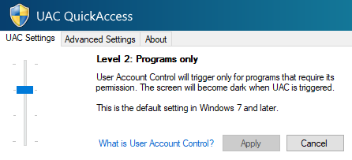
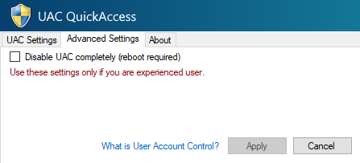
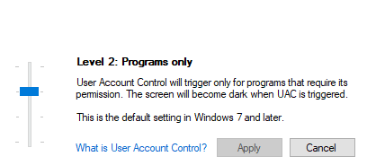

Since its introduction in Windows Vista, User Account Control has prevented many users from running untrusted programs or cathcing viruses. But it also didn't help some other users and only made them sick of it. If you are one of those users, this program is right for you.
Best safety is your brain
 Aside from standard UAC settings that are present in the system, this program has several additional options that can turn off UAC completely, turn off elevation prompt for non-admin users and turn off the ability to launch unsigned applications (including this one, so be careful). |
Works even with Vista
 UAC QuickAccess is compatible with wide range of Windows operating systems, starting from most modern Windows 11 up to the really old Windows Vista, where UAC first appeared way back in 2007. That means every PC that you will set up will support UAC QuickAccess. |
Two editions
 UAC QuickAccess comes in two versions: standard and stripped down. The latter has only standard UAC settings and does not have any advanced options and 'About' tab. Of course, the stripped down version copies the built-in UAC settings, but... whatever. |
Version 1.1.0. For Windows 11, 10, 8.1, 8, 7 and Vista. Requires User Account Control permission. Available under MIT License.